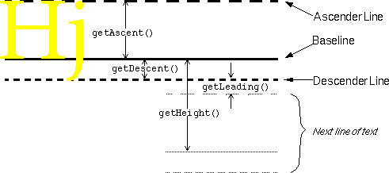

GUI: AWT Graphics |

Graphics Methods for drawing text:
public void drawBytes(byte data[], int offset, int length, int x, int y); public void drawChars(char data[], int offset, int length, int x, int y); public void drawString(String data, int x, int y);Note:
For the text drawing methods, x and y are integers that specify the position of the lower left corner of the text. To be precise, the y coordinate specifies the baseline of the text.
FontMetrics objects are used to get information about a font:
boolean textFits = false; Font font = g.getFont(); FontMetrics fontMetrics = g.getFontMetrics(); while (!textFits) { if ((fontMetrics.getHeight() <= maxCharHeight) && (fontMetrics.stringWidth("drawRoundRect()") <= gridWidth)) { textFits = true; } else { g.setFont(font = new Font(font.getName(), font.getStyle(), font.getSize() - 1)); fontMetrics = g.getFontMetrics(); } }Methods that return information about a font's vertical size:
- getAscent(), getMaxAscent(), getDescent(), getMaxDescent(), getHeight(), getLeading()